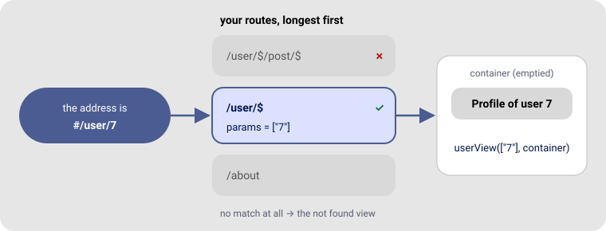
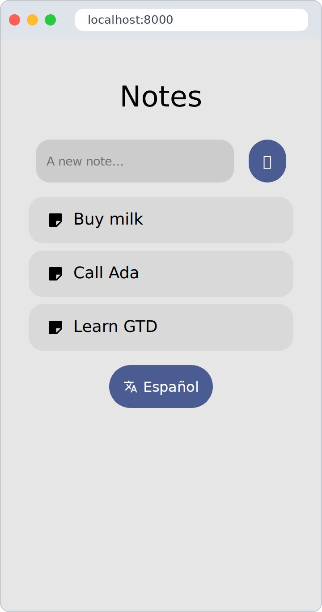
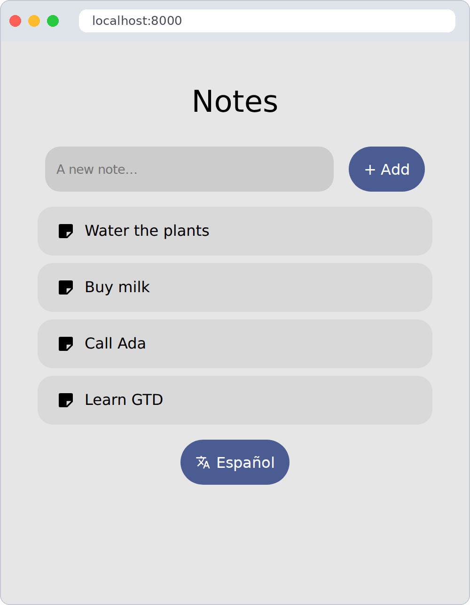
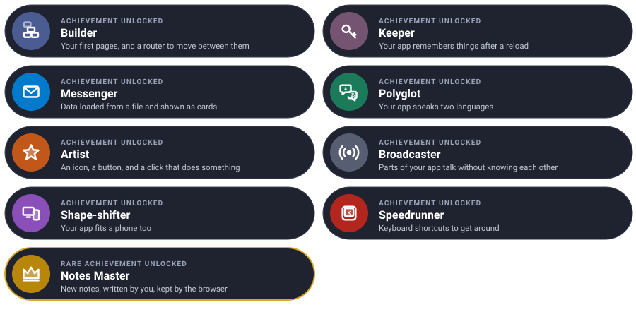

Build a small app, one level at a time. Each level teaches one piece of GTD and ends with something new on your screen.
We will build Notes: an app that lists your notes, opens them, speaks English and Spanish and remembers your choices. At the end, a small challenge: writing new notes.
Every level has the same shape: the idea (explained with something from everyday life), the code, a checkpoint to know it works, and an optional bonus if you want a bit more. Go at your own pace — each level leaves you with a working app.
You need the project from Getting started (5 minutes, if you haven’t done it yet). Open two terminals in your project folder and leave these running the whole quest:
# terminal 1 — rebuilds your app every time you save
./bin/esbuild src/main.ts --bundle --format=esm --outfile=out/main.js --watch
# terminal 2 — serves it at http://localhost:8000
python3 -m http.server 8000
Now you only need to save and reload the browser after each change.
Add this to the <style> in your index.html; it makes the notes look like cards:
.note { width: 100%; max-width: 420px; padding: 1rem 1.25rem; color: inherit; }
This is where everything will live by the end:
my-app/
├── index.html
├── config.json ← level 2
├── api/notes.json ← level 3
├── resources/
│ ├── i18n/en/notes.json ← level 4
│ ├── i18n/es/notes.json ← level 4
│ └── icons.json ← level 5
└── src/
├── gtd/
└── main.ts ← every level
| Mission | Modules | Time |
|---|---|---|
| A home page, and one page per note | dom, router |
5 min |
Think of LEGO. uiComponent gives you a brick — a title, a button, a card — and you click
bricks into each other with append.
The router is the receptionist of a building. You say “I’m going to /note/2”, and they send
you to the right room. That room is a view: a function that builds one page.

Replace src/main.ts with:
import { uiComponent } from "./gtd/dom.js"
import { setRoute, showRoute } from "./gtd/router.js"
const app = document.getElementById("app")
// the home page
setRoute("/", async (_, container) => {
container.append(uiComponent({ type: "h1", text: "Notes" }))
})
// one page per note: "$" catches the note number
setRoute("/note/$", async ([id], container) => {
container.append(uiComponent({ type: "h1", text: `Note ${id}` }))
})
// draw the right page now, and every time the address changes
const navigate = () => showRoute(location.hash.slice(1) || "/", app)
window.addEventListener("hashchange", navigate)
navigate()
Open http://localhost:8000: you see Notes. Now type #/note/3 at the end of the address:
the page says Note 3.

Add a page at #/about that says who made the app.
setRoute("/about", async (_, container) => {
container.append(uiComponent({ type: "h1", text: "Made by me, with GTD" }))
})Learn more: Building the interface · Views and routing
| Mission | Modules | Time |
|---|---|---|
| Settings that survive closing the browser | configuration |
4 min |
Your app forgets everything when you reload — like a goldfish. The configuration is a sticky note on the fridge: you write on it, close the tab, come back tomorrow… and it is still there.
The first time, we fill it from a file with defaults. After that, the browser keeps it.
Create config.json next to index.html:
{ "api": "./api", "lang": "en" }
Open src/gtd/configuration.ts and give your sticky note a name:
const configurationId: string = "notes"
At the top of src/main.ts, after the imports:
import { loadConfiguration, getConfiguration } from "./gtd/configuration.js"
// fill the sticky note only the first time, so your changes are kept
if (undefined == getConfiguration("api"))
await loadConfiguration("./config.json")
Open the browser console (F12 → Console) and type localStorage.notes. You should see:
'{"api":"./api","lang":"en"}'
That is your sticky note. Reload the page: it is still there.
Count how many times the app was opened, and log it to the console.
import { setConfiguration } from "./gtd/configuration.js"
const visits = (getConfiguration("visits") ?? 0) + 1
setConfiguration("visits", visits)
console.log(`Welcome back! Visit number ${visits}`)Learn more: Configuration
| Mission | Modules | Time |
|---|---|---|
| Load your notes and show them as cards | http, bubble |
6 min |
Asking a server for data is like ordering food delivery:
httpGet({ url })awaitResponseawait response.json()Our “restaurant” is a JSON file in the project, so you need no real server.
Create api/notes.json:
[
{ "id": "1", "text": "Buy milk" },
{ "id": "2", "text": "Call Ada" },
{ "id": "3", "text": "Learn GTD" }
]
Order the notes once, when the app starts:
import { httpGet } from "./gtd/http.js"
import { BubbleUI } from "./gtd/bubble.js"
type Note = { id: string, text: string }
const response = await httpGet({ url: `${getConfiguration("api")}/notes.json`, parameters: {} })
const notes: Note[] = await response.json()
And show each one as a card. Bubble’s surface-1 class gives it a soft background and round
corners:
setRoute("/", async (_, container) => {
container.append(uiComponent({ type: "h1", text: "Notes" }))
for (const note of notes) {
container.append(uiComponent({
type: "a",
text: note.text,
classes: ["note", BubbleUI.Surface1],
attributes: { href: `#/note/${note.id}` },
}))
}
})
setRoute("/note/$", async ([id], container) => {
const note = notes.find(n => n.id == id)
container.append(uiComponent({ type: "h1", text: note ? note.text : "No such note" }))
})
Three cards on the home page. Click one: it opens.

Rename api/notes.json for a moment: the app breaks. Make it show a friendly message instead.
const response = await httpGet({ url: `${getConfiguration("api")}/notes.json`, parameters: {} })
const notes: Note[] = response.ok ? await response.json() : []
if (!response.ok)
document.body.prepend(uiComponent({ type: "p", text: "😴 Notes are sleeping, try again later." }))Learn more: Talking to a server · Bubble UI
| Mission | Modules | Time |
|---|---|---|
| Your app in English and Spanish | i18n |
5 min |
Think of subtitles. The film is the same; only the subtitle file changes. Your code says
“show the title text”, and a JSON file per language says what that text is.
Create resources/i18n/en/notes.json:
{ "title": "Notes", "missing": "No such note", "switch": "Español" }
…and resources/i18n/es/notes.json:
{ "title": "Notas", "missing": "No existe esa nota", "switch": "English" }
Load the subtitles in the language of your sticky note:
import { setCurrentLanguage, loadTextBundle, getText } from "./gtd/i18n.js"
await setCurrentLanguage(getConfiguration("lang"))
await loadTextBundle("notes")
And replace the English words in your views with getText:
container.append(uiComponent({ type: "h1", text: getText("notes", "title") }))
container.append(uiComponent({ type: "h1", text: note ? note.text : getText("notes", "missing") }))
In the console, switch the sticky note to Spanish and reload:
localStorage.notes = '{"api":"./api","lang":"es"}'
The title is now Notas.
GTD also knows Galician (gl) and Catalan (ca). Add one of them.
// resources/i18n/gl/notes.json
{ "title": "Notas", "missing": "Non existe esa nota", "switch": "English" }
// then, in the console:
localStorage.notes = '{"api":"./api","lang":"gl"}'Learn more: Translations
| Mission | Modules | Time |
|---|---|---|
| A button, with an icon, that switches language | icons, dom events |
6 min |
An icon collection is a sticker album: you load the album once, then stick any sticker anywhere, at any size and colour.
A click event is a doorbell: you decide in advance what happens when someone rings it.
Create resources/icons.json with one sticker:
{ "translate": "<path d=\"M12.9 15.1 10.4 12.6v-.1A17 17 0 0 0 14 6h3V4h-7V2H8v2H1v2h11.2A16 16 0 0 1 9 11.4 16 16 0 0 1 6.7 8h-2a18 18 0 0 0 3 4.6L2.6 17.6 4 19l5-5 3.1 3.1zM18.5 10h-2L12 22h2l1.1-3h4.8l1.1 3h2zm-2.6 7 1.6-4.3 1.6 4.3z\"/>" }
Load the album when the app starts:
import { setConfiguration } from "./gtd/configuration.js"
import { setDomEvents } from "./gtd/dom.js"
import { loadIcons, getIcon } from "./gtd/icons.js"
await loadIcons("app", "./resources/icons.json")
And add the button at the end of the home page:
const switchButton = uiComponent({
type: "button",
text: getText("notes", "switch"),
classes: [BubbleUI.Primary, BubbleUI.BoxYCenter], // blue, icon and text side by side
styles: { gap: "6px" },
})
switchButton.prepend(getIcon("app", "translate", "16px", "currentColor"))
// the doorbell: what happens on click
setDomEvents(switchButton, {
click: async () => {
const lang = "es" == getConfiguration("lang") ? "en" : "es"
setConfiguration("lang", lang) // write it on the sticky note
await setCurrentLanguage(lang, true) // swap the subtitles
navigate() // draw the page again
},
})
container.append(switchButton)
Press the button: the whole page changes language. Reload: it remembers.
| English | Español |
|---|---|
 |
 |
Add a second icon to icons.json and show it at the start of each note card.
// in resources/icons.json, next to "translate":
"note": "<path d=\"M5 3h14a2 2 0 0 1 2 2v9l-7 7H5a2 2 0 0 1-2-2V5a2 2 0 0 1 2-2zm8 16 6-6h-6z\"/>"
// in the loop that draws the cards:
const card = uiComponent({ type: "a", text: note.text, classes: ["note", BubbleUI.Surface1, BubbleUI.BoxYCenter],
styles: { gap: "10px" }, attributes: { href: `#/note/${note.id}` } })
card.prepend(getIcon("app", "note", "20px", "currentColor"))
container.append(card)Learn more: Icons · Building the interface
| Mission | Modules | Time |
|---|---|---|
| Tell the rest of the app that the language changed | signals |
4 min |
A signal is a radio station. The button broadcasts “language changed!”. Anyone tuned in reacts. The station doesn’t know who is listening — and doesn’t need to.
This keeps your code tidy: tomorrow you can add another listener without touching the button.

Create the station and a listener that writes in the browser tab’s title:
import { setSignal, connectToSignal, emitSignal } from "./gtd/signals.js"
const languageChanged = setSignal()
let changes = 0
connectToSignal(languageChanged, async lang => {
changes++
document.title = `Notes (${lang}, ${changes} changes)`
})
Broadcast from the button, after setCurrentLanguage:
await emitSignal(languageChanged, lang)
Look at the browser tab while you press the button: Notes (es, 1 changes), Notes (en, 2 changes)…
Tune a second listener to the same station: show a small message for two seconds.
import { sleep } from "./gtd/time.js"
connectToSignal(languageChanged, async lang => {
const toast = uiComponent({ text: `🌍 ${lang}`, classes: [BubbleUI.PrimaryContainer],
styles: { position: "fixed", bottom: "1rem", right: "1rem", padding: ".75rem 1rem" } })
document.body.append(toast)
sleep(2000).then(() => toast.remove()) // no await: don't make the button wait two seconds
})Learn more: Signals
| Mission | Modules | Time |
|---|---|---|
| Look good on a phone too | display |
3 min |
You wear different clothes when it rains — same you, different outfit. checkDisplayType
looks at the weather (the screen) and writes mobile or desktop on the page. Your CSS picks the
outfit.
import { checkDisplayType } from "./gtd/display.js"
checkDisplayType() // <html data-display="mobile"> or "desktop"
window.addEventListener("resize", checkDisplayType)
And the rainy-day outfit, in index.html’s <style>:
[data-display="mobile"] body { font-size: 18px; }
[data-display="mobile"] .note { max-width: none; }
Open the developer tools, turn on the device toolbar (the phone icon, or Ctrl + Shift + M) and pick
a phone: bigger text, cards as wide as the screen.

| Mission | Modules | Time |
|---|---|---|
| Move around without the mouse | shortcuts |
3 min |
You already use shortcuts every day: Ctrl + C, Ctrl + V. Speedrunners in games beat
levels faster with them. Let’s give your app some.
Press Ctrl + H anywhere to go home:
import Shortcuts, { KeyInteraction } from "./gtd/shortcuts.js"
const keys = Shortcuts.register(document)
Shortcuts.set(keys, {
interaction: KeyInteraction.keyDown,
key: "h",
ctrlKey: true,
preventDefault: true, // don't open the browser's history
callback: () => location.hash = "/",
})
Open a note, press Ctrl + H: you are home.
Make Esc go home too.
Shortcuts.set(keys, {
interaction: KeyInteraction.keyDown,
key: "Escape",
callback: () => location.hash = "/",
})Learn more: Keyboard shortcuts
| Mission | Modules | Time |
|---|---|---|
| Write new notes, and keep them after a reload | everything you learned | 10 min |
This time there is no step-by-step, but you already have every piece:
| You need to… | You learned it in |
|---|---|
| Draw a text box and a button | Level 1 |
| Keep the notes after a reload | Level 2 |
Start from api/notes.json the first time |
Level 3 |
| React to the button | Level 5 |
| Give each note a unique id | uuidv4() from crypto.ts |
The goal: a text box and an + Add button on the home page. Type “Water the plants”, press + Add, and a new card appears. Reload: it is still there.
Hint: keep the whole list on the sticky note —
setConfiguration("notes", notes)— and read it back at start withgetConfiguration("notes").
Try it on your own first, then compare with the solution.

import { uuidv4 } from "./gtd/crypto.js"
import { Html } from "./gtd/html.js"
// start from the saved notes, or from the file the first time
const notes: Note[] = getConfiguration("notes") ?? await response.json()
// on the home page, before the cards
const form = uiComponent({ classes: [BubbleUI.BoxRow, BubbleUI.BoxYCenter], styles: { width: "100%", maxWidth: "420px" } })
const input = uiComponent({ type: Html.Input, attributes: { placeholder: "A new note…" }, styles: { flex: "1" } }) as HTMLInputElement
const add = uiComponent({ type: Html.Button, text: "+ Add", classes: [BubbleUI.Primary] })
setDomEvents(add, {
click: () => {
if ("" == input.value.trim()) return
notes.unshift({ id: uuidv4(), text: input.value.trim() })
setConfiguration("notes", notes) // the sticky note keeps them
navigate() // draw the list again
},
})
form.append(input, add)
container.append(form)
You built a real app, and you can read every line of it. That is the GTD way.
| Idea | Difficulty | Hint |
|---|---|---|
| Delete a note | ⭐ | A button on the note page, notes.splice(…), setConfiguration |
| Dark mode switch | ⭐ | document.documentElement.dataset.theme = "dark" — see Configuration |
| Type the title letter by letter | ⭐⭐ | Animations |
| Search your notes | ⭐⭐ | An input, notes.filter(…), draw again on input events |
| Save notes on a real server | ⭐⭐⭐ | httpPost — see Talking to a server |
Stuck at any point? See Troubleshooting.